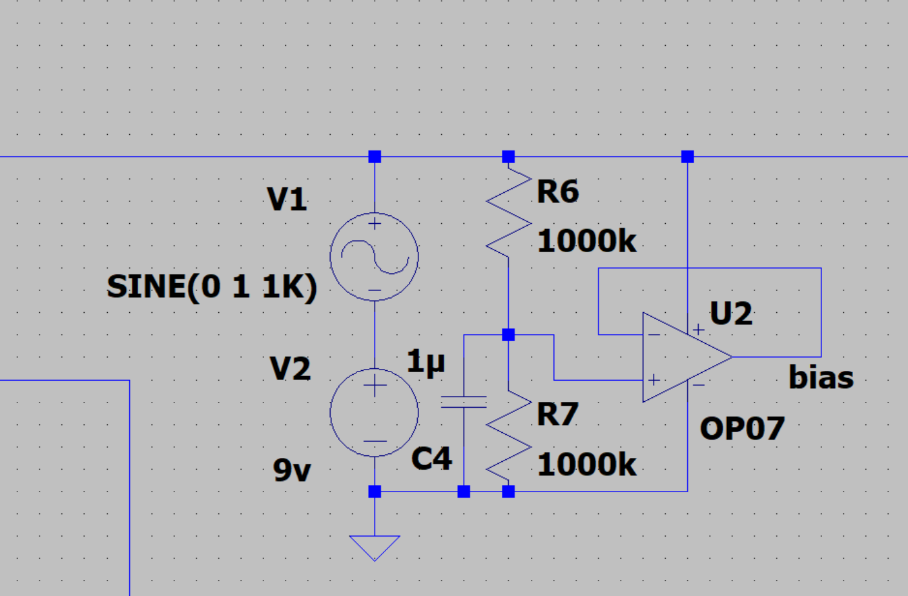
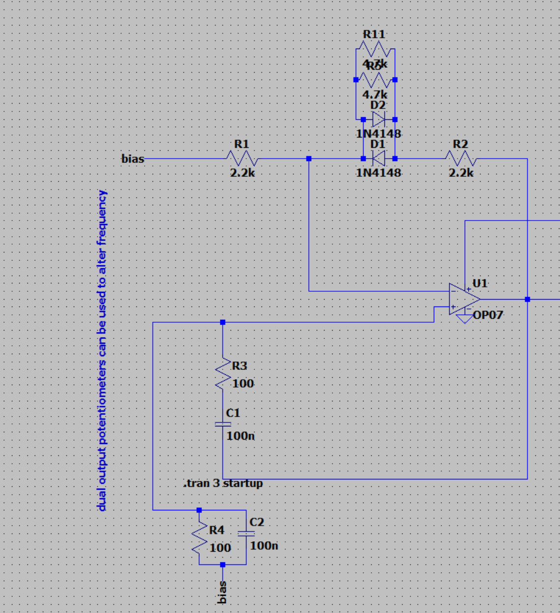
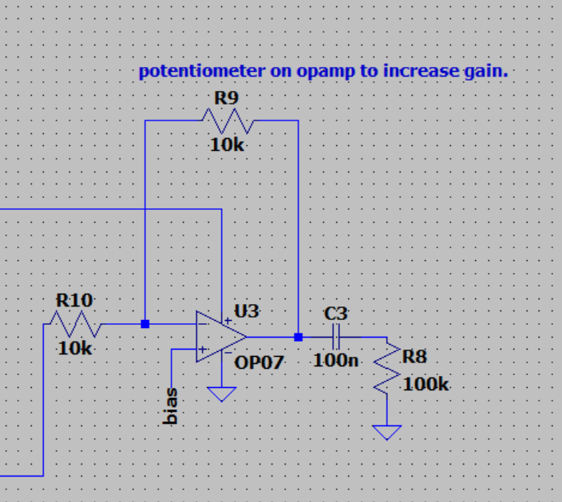

Wien-Bridge Overview
S basic RC oscillator that doesn't require a external input to oscillate. Instead, the oscillation occurs due to a mix a positive and negative feedback in the circuit.
schematic
power
The circuit is powered by a 9v so a bias of 4.5v is created with a voltage divider and a buffer so the oscillation would be centered at 4.5v. For simulation purposes I also added a sine wave to add noise to the 9V power supply to see how it would impact the bias voltage.
Wien-Bridge Circuit
Wien-Bridge consists of two RC networks, one in parallel and one in series. The values of both the resistor and capacitors in each RC network are the same(are very similar considereing tolerances). This allows the two RC networks to have the same Resonant Frequency (Equation = 1/(2*pi*R*C)) forming a bandpass filter with one resonant frequency. The diodes are used as a way to apply a controlled compression to the amplifier output.
Amplitude Adjustment
after the output of the wienbridge the signal is then goes through a inverting amplifier so I can adjust the amplitude of the signal. Note that This simulation is using a gain of 1 as a place holder the actual values would be 10k for input resistance and 100 in series with a 10k potentiometer in the feeback resistance. The choice to go with an inverting amplifer came from the idea that the output of the signal is round 2v peak-to-peak and I would like for the ability to decrease the signal to a smaller amplitude which was possible if I went with a inverting amplifier topology rather than a non-inverting topology.